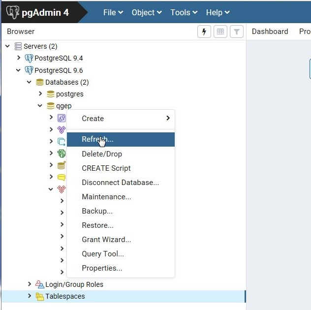

12_0_roles.sql has to be run before restoring the demodata database.
12_1_roles.sql has to be run if you initialize your module with with the commandline.
An evolution of the roles management is in progress and will be available soon.
It is highly recommended to use these when using TWW in a production environment.
Copy paste and run the .sql files content in the query editor of pgAdmin (Tools > Query Tool).
If the Restore failed and the detail reads something like „pg_restore: error: could not execute query: FEHLER: role »tww_viewer« does not exist then you have not created the minimal roles (see above)
Schliessen sie das Wiederherstellungsfenster
Recktsklick auf die Datenbank und ‚Refresh‘ wählen

Vermutlich wollen sie die Datenbank jetzt umbenennen: Rechtsklick auf die Datenbank, klick auf Eigenschaften… und geben sie einen neuen Namen ein.
Wenn dieses SQL in einem SQL Abfrage Fenster gestartet wird, gibt es einen Fehler. Es muss ein BAT-File benutzt werden.
Benutze eine BAT-Datei wie folgt, um die Datenbank, die Erweiterungen und die Schemata mit Wertelisten zu erzeugen (ersetzen sie x.y.z mit ihrer Versionnummer):
@echooffsetfilename="tww_vx.y.z_structure_with_value_lists.sql"ifnotexist%filename%(echo"File %filename% does not exist. Please download the latest datamodel from https://github.com/TWW/datamodel/releases (structure_with_value_lists.sql) and adjust filename in this batch file."PAUSEexit-1)set/pdb="Please enter the database name? (e.g. tww_community) "set/ppassword="Please enter the password for user postgres? "setport=5432setPATH=%PATH%;C:\ProgramFiles\PostgreSQL\15\binsetPGPASSWORD=%password%createdb-Upostgres-p%port%%db%psql-Upostgres-hlocalhost-p%port%-d%db%-f%filename%psql-Upostgres-hlocalhost-p%port%-d%db%-c"GRANT USAGE ON SCHEMA public TO ""tww"""psql-Upostgres-hlocalhost-p%port%-d%db%-c"GRANT USAGE ON SCHEMA tww_vl TO ""tww"""psql-Upostgres-hlocalhost-p%port%-d%db%-c"GRANT USAGE ON SCHEMA tww_od TO ""tww"""psql-Upostgres-hlocalhost-p%port%-d%db%-c"GRANT USAGE ON SCHEMA tww_import TO ""tww"""psql-Upostgres-hlocalhost-p%port%-d%db%-c"GRANT USAGE ON SCHEMA tww_swmm TO ""tww"""psql-Upostgres-hlocalhost-p%port%-d%db%-c"GRANT USAGE ON SCHEMA tww_sys TO ""tww"""psql-Upostgres-hlocalhost-p%port%-d%db%-c"GRANT SELECT, INSERT, UPDATE, DELETE ON ALL TABLES IN SCHEMA tww_od TO ""tww""";psql-Upostgres-hlocalhost-p%port%-d%db%-c"GRANT SELECT, INSERT, UPDATE, DELETE ON ALL TABLES IN SCHEMA tww_swmm TO ""tww""";psql-Upostgres-hlocalhost-p%port%-d%db%-c"GRANT SELECT, INSERT, UPDATE, DELETE ON ALL TABLES IN SCHEMA tww_import TO ""tww""";psql-Upostgres-hlocalhost-p%port%-d%db%-c"GRANT SELECT ON ALL TABLES IN SCHEMA tww_vl TO ""tww""";psql-Upostgres-hlocalhost-p%port%-d%db%-c"GRANT SELECT ON ALL TABLES IN SCHEMA tww_sys TO ""tww""";psql-Upostgres-hlocalhost-p%port%-d%db%-c"GRANT SELECT ON ALL TABLES IN SCHEMA public TO ""tww"""psql-Upostgres-hlocalhost-p%port%-d%db%-c"GRANT USAGE ON ALL SEQUENCES IN SCHEMA tww_od TO ""tww"""psql-Upostgres-hlocalhost-p%port%-d%db%-c"REFRESH MATERIALIZED VIEW tww_od.vw_network_node"psql-Upostgres-hlocalhost-p%port%-d%db%-c"REFRESH MATERIALIZED VIEW tww_od.vw_network_segment"PAUSE
Bemerkung
Es kann irgendein Datenbankname verwendet werden.
Update privileges for the tww_od, tww_sys, tww_vl, tww_network, tww_import, tww_swmm schema as described in the chapter Create minimal roles and access.